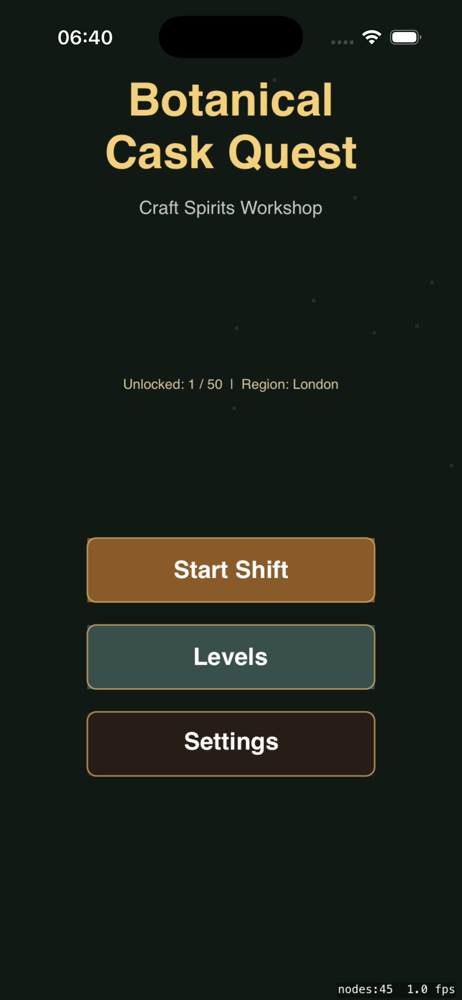
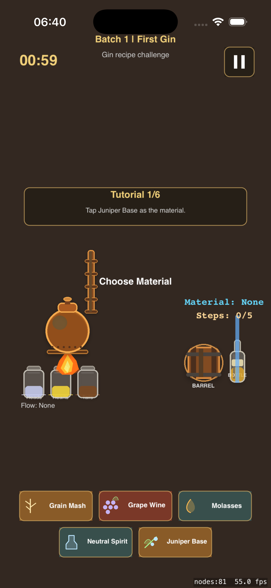
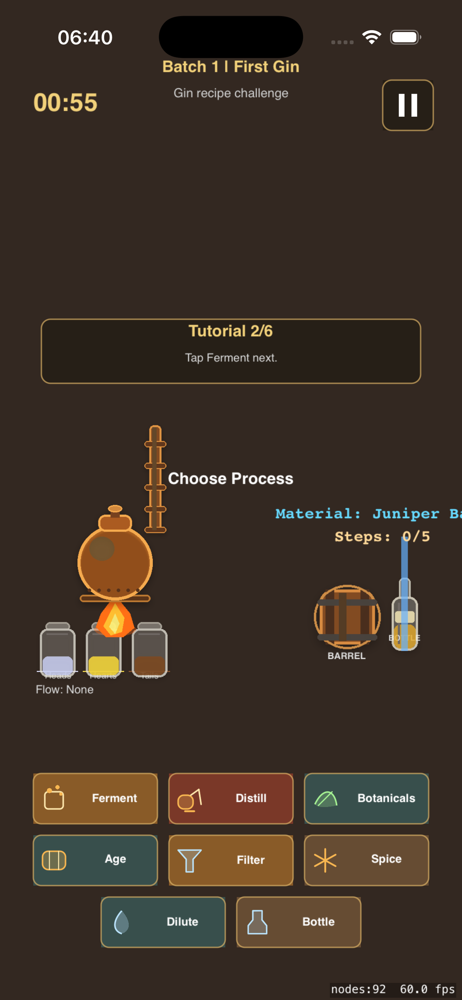
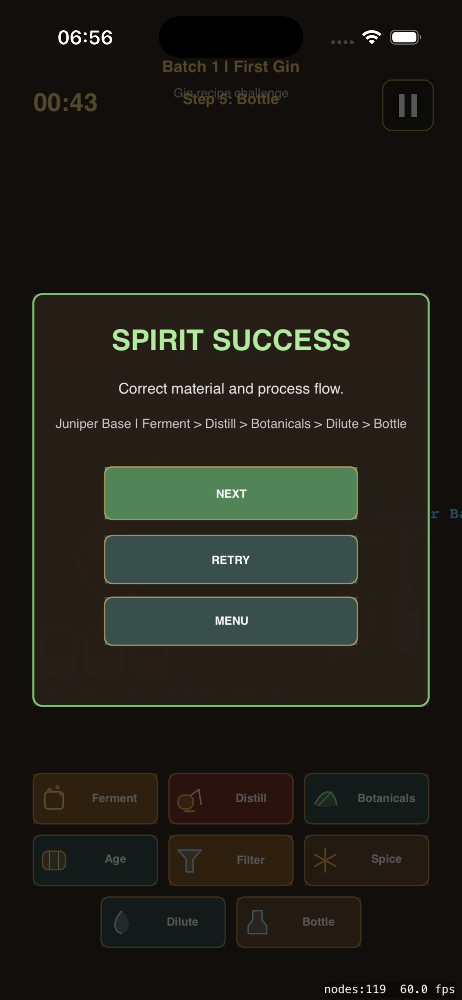

Botanical Cask Quest
Craft Spirits Workshop
A 1890s craft distillation workshop simulation. Operate copper stills, cut heads, hearts, and tails, age in oak casks, and bottle 50 spirits across 5 historic regions.
Screenshots

Main Menu
Start a shift, browse levels, or adjust settings in the workshop.

Distillation Workshop
Operate the copper still, watch temperature and proof, cut fractions.

Recipe & Process
Select the correct material and process steps for each spirit.

Spirit Success
Complete the batch and unlock the next level.
About Botanical Cask Quest
Botanical Cask Quest is an offline craft distillation simulation built with SpriteKit. Set in the 1890-1920 era, you play as a distiller operating copper stills across five historic spirit regions.
Each level challenges you to select the correct raw material, follow the right process flow, heat the still to the proper temperature, cut heads hearts and tails at the right moment, age in the correct cask, and bottle at the target proof.
Progress through 50 contracts spanning London gin, Irish whiskey, Cognac brandy, Polish vodka, and Barbados rum. Master the still, read the thermometer, and craft the perfect spirit.
How to Play
Select Material
Choose the correct raw material for the spirit type (grain, grape, molasses, juniper berry, etc.).
Follow Process
Select process steps in order: Ferment, Distill, Botanicals, Age, Bottle.
Heat the Still
Use Fire Low and Fire High to reach the correct boiler temperature for each fraction.
Cut Fractions
Cut Heads, Hearts, and Tails at the right temperature and proof to collect the spirit.
Age & Bottle
Age in the correct cask type, dilute to target proof, and bottle the finished spirit.
Progress
50 contracts across 5 regions. Each correct batch unlocks the next level.
Support
How do I play?
Select the right material, follow the process steps, heat the still, cut fractions, age, and bottle.
Does it need internet?
No. Botanical Cask Quest is fully offline. No accounts, no ads, no tracking.
Need help?
Visit the App Store product page for support contact after release.